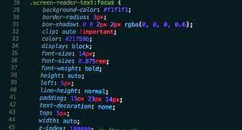

Hojas de estilo en cascada CSS
La definición de (CSS) no es mas que las iniciales en ingles de "Hojas de estilo en cascada" que en ingles es "Casading Style Sheets" el cual fue diseñado para trabajar en conjunto con HTML donde han venido evolucionanado tanto que en la actualidad tenemos las dos verciones con varias actualizaciones que son HTML5 y CSS3 conde CSS es el encargado de dar el estilo a HTML. Encontrara en la opción de tema 1 todo lo relacionado con CSS.

Frameworks CSS
El concepto para Frameworks no es mas que una herramienta que funciona para ágilizar un proyecto de software, esto se ha tenido que implementar por la gran de manda de desarrollo de software lo cual con este tipo de herramientas nos facilita el trabajo donde la creación de un framework nos ayuda a que el software sea mas ágil y productivo, cuando hablamos de framework CSS hablamos de un aplicatvo que hace mas rentable y eficiente el CSS. para un mayor concepto de framework CSS en el tema 2 encontrara mas sobre esto.